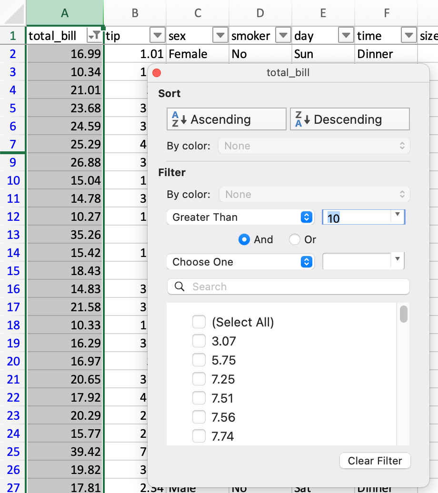
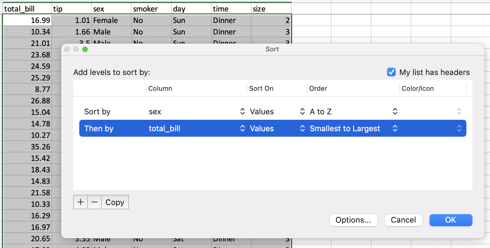
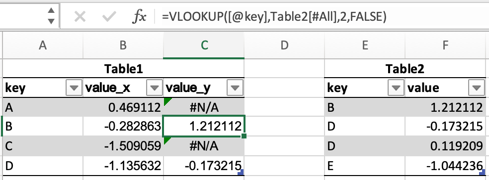
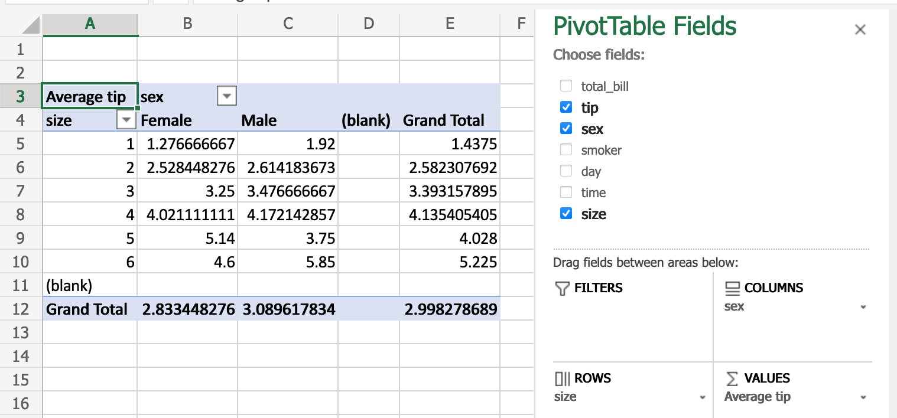

与电子表格对比#
由于许多潜在的 pandas 用户对 Excel 等电子表格程序有所了解，本页面旨在提供一些示例，说明如何使用 pandas 执行各种电子表格操作。本页面将使用 Excel 的术语并链接到其文档，但在 Google Sheets、LibreOffice Calc、Apple Numbers 以及其他与 Excel 兼容的电子表格软件中，许多操作都是相同或相似的。
如果您是 pandas 的新手，建议您首先阅读 pandas 十分钟教程，以便熟悉该库。
按照惯例，我们这样导入 pandas 和 NumPy
In [1]: import pandas as pd
In [2]: import numpy as np
数据结构#
通用术语对照#
pandas |
Excel |
|---|---|
|
工作表 |
|
列 |
|
行标题 |
行 |
行 |
|
空单元格 |
DataFrame#
pandas 中的 DataFrame 类似于 Excel 工作表。虽然 Excel 工作簿可以包含多个工作表，但 pandas DataFrame 是独立存在的。
Series#
一个 Series 是表示 DataFrame 中一列的数据结构。处理 Series 类似于引用电子表格中的一列。
Index#
每个 DataFrame 和 Series 都有一个 Index，它们是数据的行标签。在 pandas 中，如果没有指定索引，则默认使用 RangeIndex（第一行 = 0，第二行 = 1，依此类推），这类似于电子表格中的行标题/行号。
在 pandas 中，索引可以设置为一个（或多个）唯一值，这类似于在工作表中有一个用作行标识符的列。与大多数电子表格不同，这些 Index 值实际上可以用于引用行。（请注意，这可以在 Excel 中通过结构化引用实现。）例如，在电子表格中，您会将第一行引用为 A1:Z1，而在 pandas 中，您可以使用 populations.loc['Chicago']。
索引值也是持久的，因此如果您重新排序 DataFrame 中的行，特定行的标签不会改变。
有关如何有效使用 Index 的更多详细信息，请参阅 索引文档。
副本与原地操作#
大多数 pandas 操作会返回 Series/DataFrame 的副本。为了让更改“生效”，您需要将其赋值给新变量
sorted_df = df.sort_values("col1")
或覆盖原始变量
df = df.sort_values("col1")
注意
您会看到某些方法提供了 inplace=True 或 copy=False 关键字参数
df.replace(5, inplace=True)
目前正在积极讨论弃用和移除大多数方法（例如 dropna）的 inplace 和 copy 关键字，但极少数方法（包括 replace）除外。在写时复制 (Copy-on-Write) 的上下文中，这两个关键字将不再必要。提案可以在 此处 找到。
数据输入/输出#
从值构建 DataFrame#
在电子表格中，可以直接在单元格中输入值。
pandas DataFrame 可以通过多种不同方式构建，但对于少量值，通常方便将其指定为 Python 字典，其中键是列名，值是数据。
In [3]: df = pd.DataFrame({"x": [1, 3, 5], "y": [2, 4, 6]})
In [4]: df
Out[4]:
x y
0 1 2
1 3 4
2 5 6
读取外部数据#
无论是 Excel 还是 pandas 都可以从各种来源以各种格式导入数据。
CSV#
我们来加载并显示 pandas 测试中的 tips 数据集，它是一个 CSV 文件。在 Excel 中，您会下载然后 打开 CSV 文件。在 pandas 中，您将 CSV 文件的 URL 或本地路径传递给 read_csv()
In [5]: url = (
...: "https://raw.githubusercontent.com/pandas-dev"
...: "/pandas/main/pandas/tests/io/data/csv/tips.csv"
...: )
...:
In [6]: tips = pd.read_csv(url)
In [7]: tips
Out[7]:
total_bill tip sex smoker day time size
0 16.99 1.01 Female No Sun Dinner 2
1 10.34 1.66 Male No Sun Dinner 3
2 21.01 3.50 Male No Sun Dinner 3
3 23.68 3.31 Male No Sun Dinner 2
4 24.59 3.61 Female No Sun Dinner 4
.. ... ... ... ... ... ... ...
239 29.03 5.92 Male No Sat Dinner 3
240 27.18 2.00 Female Yes Sat Dinner 2
241 22.67 2.00 Male Yes Sat Dinner 2
242 17.82 1.75 Male No Sat Dinner 2
243 18.78 3.00 Female No Thur Dinner 2
[244 rows x 7 columns]
与 Excel 的文本导入向导 类似，read_csv 可以接受多个参数来指定如何解析数据。例如，如果数据是制表符分隔的，并且没有列名，则 pandas 命令将是
tips = pd.read_csv("tips.csv", sep="\t", header=None)
# alternatively, read_table is an alias to read_csv with tab delimiter
tips = pd.read_table("tips.csv", header=None)
Excel 文件#
Excel 通过双击文件或使用 “打开”菜单 来打开 各种 Excel 文件格式。在 pandas 中，您使用 专门的方法来读写 Excel 文件。
我们首先根据上面示例中的 tips DataFrame 创建一个新的 Excel 文件
tips.to_excel("./tips.xlsx")
如果您希望随后访问 tips.xlsx 文件中的数据，可以使用以下方法将其读入您的模块：
tips_df = pd.read_excel("./tips.xlsx", index_col=0)
您刚刚使用 pandas 读取了一个 Excel 文件！
限制输出#
电子表格程序一次只会显示一屏数据，然后允许您滚动，因此通常不需要限制输出。在 pandas 中，您需要花更多心思来控制您的 DataFrame 的显示方式。
默认情况下，pandas 会截断大型 DataFrame 的输出，以显示其第一行和最后一行。这可以通过 更改 pandas 选项，或使用 DataFrame.head() 或 DataFrame.tail() 来实现。
In [8]: tips.head(5)
Out[8]:
total_bill tip sex smoker day time size
0 16.99 1.01 Female No Sun Dinner 2
1 10.34 1.66 Male No Sun Dinner 3
2 21.01 3.50 Male No Sun Dinner 3
3 23.68 3.31 Male No Sun Dinner 2
4 24.59 3.61 Female No Sun Dinner 4
导出数据#
默认情况下，桌面电子表格软件会保存为各自的文件格式（.xlsx、.ods 等）。但是，您可以 保存为其他文件格式。
数据操作#
列操作#
在电子表格中，公式 通常在单个单元格中创建，然后被 拖动 到其他单元格中，为其他列计算结果。在 pandas 中，您可以直接对整列进行操作。
pandas 通过指定 DataFrame 中的单个 Series 来提供矢量化操作。新列也可以用相同的方式赋值。DataFrame.drop() 方法从 DataFrame 中删除一列。
In [9]: tips["total_bill"] = tips["total_bill"] - 2
In [10]: tips["new_bill"] = tips["total_bill"] / 2
In [11]: tips
Out[11]:
total_bill tip sex smoker day time size new_bill
0 14.99 1.01 Female No Sun Dinner 2 7.495
1 8.34 1.66 Male No Sun Dinner 3 4.170
2 19.01 3.50 Male No Sun Dinner 3 9.505
3 21.68 3.31 Male No Sun Dinner 2 10.840
4 22.59 3.61 Female No Sun Dinner 4 11.295
.. ... ... ... ... ... ... ... ...
239 27.03 5.92 Male No Sat Dinner 3 13.515
240 25.18 2.00 Female Yes Sat Dinner 2 12.590
241 20.67 2.00 Male Yes Sat Dinner 2 10.335
242 15.82 1.75 Male No Sat Dinner 2 7.910
243 16.78 3.00 Female No Thur Dinner 2 8.390
[244 rows x 8 columns]
In [12]: tips = tips.drop("new_bill", axis=1)
请注意，我们无需逐个单元格地进行减法操作 — pandas 会为我们处理好这些。请参阅 如何从现有列创建新列。
筛选#
DataFrame 可以通过多种方式进行筛选；其中最直观的方式是使用 布尔索引。
In [13]: tips[tips["total_bill"] > 10]
Out[13]:
total_bill tip sex smoker day time size
0 14.99 1.01 Female No Sun Dinner 2
2 19.01 3.50 Male No Sun Dinner 3
3 21.68 3.31 Male No Sun Dinner 2
4 22.59 3.61 Female No Sun Dinner 4
5 23.29 4.71 Male No Sun Dinner 4
.. ... ... ... ... ... ... ...
239 27.03 5.92 Male No Sat Dinner 3
240 25.18 2.00 Female Yes Sat Dinner 2
241 20.67 2.00 Male Yes Sat Dinner 2
242 15.82 1.75 Male No Sat Dinner 2
243 16.78 3.00 Female No Thur Dinner 2
[204 rows x 7 columns]
上述语句只是将一个由 True / False 对象组成的 Series 传递给 DataFrame，返回所有为 True 的行。
In [14]: is_dinner = tips["time"] == "Dinner"
In [15]: is_dinner
Out[15]:
0 True
1 True
2 True
3 True
4 True
...
239 True
240 True
241 True
242 True
243 True
Name: time, Length: 244, dtype: bool
In [16]: is_dinner.value_counts()
Out[16]:
time
True 176
False 68
Name: count, dtype: int64
In [17]: tips[is_dinner]
Out[17]:
total_bill tip sex smoker day time size
0 14.99 1.01 Female No Sun Dinner 2
1 8.34 1.66 Male No Sun Dinner 3
2 19.01 3.50 Male No Sun Dinner 3
3 21.68 3.31 Male No Sun Dinner 2
4 22.59 3.61 Female No Sun Dinner 4
.. ... ... ... ... ... ... ...
239 27.03 5.92 Male No Sat Dinner 3
240 25.18 2.00 Female Yes Sat Dinner 2
241 20.67 2.00 Male Yes Sat Dinner 2
242 15.82 1.75 Male No Sat Dinner 2
243 16.78 3.00 Female No Thur Dinner 2
[176 rows x 7 columns]
条件逻辑#
假设我们想创建一个名为 bucket 的列，其值为 low 和 high，判断依据是 total_bill 是否小于或大于 $10。
在电子表格中，逻辑比较可以使用 条件公式 来完成。我们会使用公式 =IF(A2 < 10, "low", "high")，并将其拖动到新 bucket 列的所有单元格中。
在 pandas 中，可以使用 where 方法和 numpy 来完成相同的操作。
In [18]: tips["bucket"] = np.where(tips["total_bill"] < 10, "low", "high")
In [19]: tips
Out[19]:
total_bill tip sex smoker day time size bucket
0 14.99 1.01 Female No Sun Dinner 2 high
1 8.34 1.66 Male No Sun Dinner 3 low
2 19.01 3.50 Male No Sun Dinner 3 high
3 21.68 3.31 Male No Sun Dinner 2 high
4 22.59 3.61 Female No Sun Dinner 4 high
.. ... ... ... ... ... ... ... ...
239 27.03 5.92 Male No Sat Dinner 3 high
240 25.18 2.00 Female Yes Sat Dinner 2 high
241 20.67 2.00 Male Yes Sat Dinner 2 high
242 15.82 1.75 Male No Sat Dinner 2 high
243 16.78 3.00 Female No Thur Dinner 2 high
[244 rows x 8 columns]
日期功能#
本节将提及“日期”，但时间戳的处理方式类似。
日期功能可以分为两部分：解析和输出。在电子表格中，日期值通常会自动解析，尽管如果需要，也有 DATEVALUE 函数可用。在 pandas 中，您需要显式地将纯文本转换为 datetime 对象，无论是在 从 CSV 读取时 还是 在 DataFrame 中。
解析后，电子表格会以默认格式显示日期，尽管 格式可以更改。在 pandas 中，您通常会希望在进行计算时将日期保留为 datetime 对象。输出日期的部分（例如年份）是通过电子表格中的 日期函数 实现的，在 pandas 中则是通过 datetime 属性 实现的。
给定电子表格中 date1 和 date2 在 A 和 B 列中，您可能会有这些公式：
列 |
公式 |
|---|---|
|
|
|
|
|
|
|
|
等效的 pandas 操作如下所示。
In [20]: tips["date1"] = pd.Timestamp("2013-01-15")
In [21]: tips["date2"] = pd.Timestamp("2015-02-15")
In [22]: tips["date1_year"] = tips["date1"].dt.year
In [23]: tips["date2_month"] = tips["date2"].dt.month
In [24]: tips["date1_next"] = tips["date1"] + pd.offsets.MonthBegin()
In [25]: tips["months_between"] = tips["date2"].dt.to_period("M") - tips[
....: "date1"
....: ].dt.to_period("M")
....:
In [26]: tips[
....: ["date1", "date2", "date1_year", "date2_month", "date1_next", "months_between"]
....: ]
....:
Out[26]:
date1 date2 date1_year date2_month date1_next months_between
0 2013-01-15 2015-02-15 2013 2 2013-02-01 <25 * MonthEnds>
1 2013-01-15 2015-02-15 2013 2 2013-02-01 <25 * MonthEnds>
2 2013-01-15 2015-02-15 2013 2 2013-02-01 <25 * MonthEnds>
3 2013-01-15 2015-02-15 2013 2 2013-02-01 <25 * MonthEnds>
4 2013-01-15 2015-02-15 2013 2 2013-02-01 <25 * MonthEnds>
.. ... ... ... ... ... ...
239 2013-01-15 2015-02-15 2013 2 2013-02-01 <25 * MonthEnds>
240 2013-01-15 2015-02-15 2013 2 2013-02-01 <25 * MonthEnds>
241 2013-01-15 2015-02-15 2013 2 2013-02-01 <25 * MonthEnds>
242 2013-01-15 2015-02-15 2013 2 2013-02-01 <25 * MonthEnds>
243 2013-01-15 2015-02-15 2013 2 2013-02-01 <25 * MonthEnds>
[244 rows x 6 columns]
更多详情请参阅 时间序列 / 日期功能。
列选择#
在电子表格中，您可以通过以下方式选择所需的列：
由于电子表格列通常在 标题行中命名，因此重命名列只是更改第一个单元格中的文本。
相同的操作在 pandas 中表示如下。
保留特定列#
In [27]: tips[["sex", "total_bill", "tip"]]
Out[27]:
sex total_bill tip
0 Female 14.99 1.01
1 Male 8.34 1.66
2 Male 19.01 3.50
3 Male 21.68 3.31
4 Female 22.59 3.61
.. ... ... ...
239 Male 27.03 5.92
240 Female 25.18 2.00
241 Male 20.67 2.00
242 Male 15.82 1.75
243 Female 16.78 3.00
[244 rows x 3 columns]
删除列#
In [28]: tips.drop("sex", axis=1)
Out[28]:
total_bill tip smoker day time size
0 14.99 1.01 No Sun Dinner 2
1 8.34 1.66 No Sun Dinner 3
2 19.01 3.50 No Sun Dinner 3
3 21.68 3.31 No Sun Dinner 2
4 22.59 3.61 No Sun Dinner 4
.. ... ... ... ... ... ...
239 27.03 5.92 No Sat Dinner 3
240 25.18 2.00 Yes Sat Dinner 2
241 20.67 2.00 Yes Sat Dinner 2
242 15.82 1.75 No Sat Dinner 2
243 16.78 3.00 No Thur Dinner 2
[244 rows x 6 columns]
重命名列#
In [29]: tips.rename(columns={"total_bill": "total_bill_2"})
Out[29]:
total_bill_2 tip sex smoker day time size
0 14.99 1.01 Female No Sun Dinner 2
1 8.34 1.66 Male No Sun Dinner 3
2 19.01 3.50 Male No Sun Dinner 3
3 21.68 3.31 Male No Sun Dinner 2
4 22.59 3.61 Female No Sun Dinner 4
.. ... ... ... ... ... ... ...
239 27.03 5.92 Male No Sat Dinner 3
240 25.18 2.00 Female Yes Sat Dinner 2
241 20.67 2.00 Male Yes Sat Dinner 2
242 15.82 1.75 Male No Sat Dinner 2
243 16.78 3.00 Female No Thur Dinner 2
[244 rows x 7 columns]
按值排序#
电子表格中的排序通过 排序对话框 来实现。
pandas 有一个 DataFrame.sort_values() 方法，它接受一个要排序的列列表。
In [30]: tips = tips.sort_values(["sex", "total_bill"])
In [31]: tips
Out[31]:
total_bill tip sex smoker day time size
67 1.07 1.00 Female Yes Sat Dinner 1
92 3.75 1.00 Female Yes Fri Dinner 2
111 5.25 1.00 Female No Sat Dinner 1
145 6.35 1.50 Female No Thur Lunch 2
135 6.51 1.25 Female No Thur Lunch 2
.. ... ... ... ... ... ... ...
182 43.35 3.50 Male Yes Sun Dinner 3
156 46.17 5.00 Male No Sun Dinner 6
59 46.27 6.73 Male No Sat Dinner 4
212 46.33 9.00 Male No Sat Dinner 4
170 48.81 10.00 Male Yes Sat Dinner 3
[244 rows x 7 columns]
字符串处理#
查找字符串长度#
在电子表格中，可以使用 LEN 函数查找文本中的字符数。这可以与 TRIM 函数一起使用以删除多余的空格。
=LEN(TRIM(A2))
您可以使用 Series.str.len() 找到字符串的长度。在 Python 3 中，所有字符串都是 Unicode 字符串。len 包括尾随空格。使用 len 和 rstrip 来排除尾随空格。
In [32]: tips["time"].str.len()
Out[32]:
67 6
92 6
111 6
145 5
135 5
..
182 6
156 6
59 6
212 6
170 6
Name: time, Length: 244, dtype: int64
In [33]: tips["time"].str.rstrip().str.len()
Out[33]:
67 6
92 6
111 6
145 5
135 5
..
182 6
156 6
59 6
212 6
170 6
Name: time, Length: 244, dtype: int64
请注意，这仍然会包括字符串中的多个空格，因此并非 100% 等效。
查找子字符串位置#
电子表格函数 FIND 返回子字符串的位置，其中第一个字符为 1。
您可以使用 Series.str.find() 方法在字符串列中查找字符的位置。find 搜索子字符串的第一个位置。如果找到子字符串，该方法返回其位置。如果未找到，则返回 -1。请记住，Python 索引是基于零的。
In [34]: tips["sex"].str.find("ale")
Out[34]:
67 3
92 3
111 3
145 3
135 3
..
182 1
156 1
59 1
212 1
170 1
Name: sex, Length: 244, dtype: int64
按位置提取子字符串#
电子表格有一个 MID 公式，用于从给定位置提取子字符串。要获取第一个字符
=MID(A2,1,1)
在 pandas 中，您可以使用 [] 表示法通过位置提取字符串的子字符串。请记住，Python 索引是基于零的。
In [35]: tips["sex"].str[0:1]
Out[35]:
67 F
92 F
111 F
145 F
135 F
..
182 M
156 M
59 M
212 M
170 M
Name: sex, Length: 244, dtype: object
提取第 n 个单词#
在 Excel 中，您可以使用 “文本到列”向导 来分割文本并检索特定列。（请注意，也可以通过公式实现。）
在 pandas 中提取单词最简单的方法是按空格分割字符串，然后通过索引引用单词。请注意，如果您需要，还有更强大的方法。
In [36]: firstlast = pd.DataFrame({"String": ["John Smith", "Jane Cook"]})
In [37]: firstlast["First_Name"] = firstlast["String"].str.split(" ", expand=True)[0]
In [38]: firstlast["Last_Name"] = firstlast["String"].str.rsplit(" ", expand=True)[1]
In [39]: firstlast
Out[39]:
String First_Name Last_Name
0 John Smith John Smith
1 Jane Cook Jane Cook
更改大小写#
电子表格提供 UPPER、LOWER 和 PROPER 函数，分别用于将文本转换为大写、小写和标题大小写。
等效的 pandas 方法是 Series.str.upper()、Series.str.lower() 和 Series.str.title()。
In [40]: firstlast = pd.DataFrame({"string": ["John Smith", "Jane Cook"]})
In [41]: firstlast["upper"] = firstlast["string"].str.upper()
In [42]: firstlast["lower"] = firstlast["string"].str.lower()
In [43]: firstlast["title"] = firstlast["string"].str.title()
In [44]: firstlast
Out[44]:
string upper lower title
0 John Smith JOHN SMITH john smith John Smith
1 Jane Cook JANE COOK jane cook Jane Cook
合并#
以下表格将用于合并示例
In [45]: df1 = pd.DataFrame({"key": ["A", "B", "C", "D"], "value": np.random.randn(4)})
In [46]: df1
Out[46]:
key value
0 A 0.469112
1 B -0.282863
2 C -1.509059
3 D -1.135632
In [47]: df2 = pd.DataFrame({"key": ["B", "D", "D", "E"], "value": np.random.randn(4)})
In [48]: df2
Out[48]:
key value
0 B 1.212112
1 D -0.173215
2 D 0.119209
3 E -1.044236
在 Excel 中，可以通过 VLOOKUP 合并表格。
pandas DataFrames 有一个 merge() 方法，它提供了类似的功能。数据无需提前排序，并且可以通过 how 关键字实现不同的连接类型。
In [49]: inner_join = df1.merge(df2, on=["key"], how="inner")
In [50]: inner_join
Out[50]:
key value_x value_y
0 B -0.282863 1.212112
1 D -1.135632 -0.173215
2 D -1.135632 0.119209
In [51]: left_join = df1.merge(df2, on=["key"], how="left")
In [52]: left_join
Out[52]:
key value_x value_y
0 A 0.469112 NaN
1 B -0.282863 1.212112
2 C -1.509059 NaN
3 D -1.135632 -0.173215
4 D -1.135632 0.119209
In [53]: right_join = df1.merge(df2, on=["key"], how="right")
In [54]: right_join
Out[54]:
key value_x value_y
0 B -0.282863 1.212112
1 D -1.135632 -0.173215
2 D -1.135632 0.119209
3 E NaN -1.044236
In [55]: outer_join = df1.merge(df2, on=["key"], how="outer")
In [56]: outer_join
Out[56]:
key value_x value_y
0 A 0.469112 NaN
1 B -0.282863 1.212112
2 C -1.509059 NaN
3 D -1.135632 -0.173215
4 D -1.135632 0.119209
5 E NaN -1.044236
merge 相对于 VLOOKUP 有以下几个优势：
查找值无需是查找表的第一列
如果匹配到多行，每匹配一项都会有一行结果，而不仅仅是第一个匹配项
它将包含查找表中的所有列，而不仅仅是单个指定的列
它支持 更复杂的连接操作
其他考量#
填充柄#
在一定数量的单元格中创建遵循特定模式的数字序列。在电子表格中，这可以通过在输入第一个数字后按住 Shift 键并拖动，或者输入前两三个值然后拖动来实现。
这可以通过创建 Series 并将其赋值给所需的单元格来实现。
In [57]: df = pd.DataFrame({"AAA": [1] * 8, "BBB": list(range(0, 8))})
In [58]: df
Out[58]:
AAA BBB
0 1 0
1 1 1
2 1 2
3 1 3
4 1 4
5 1 5
6 1 6
7 1 7
In [59]: series = list(range(1, 5))
In [60]: series
Out[60]: [1, 2, 3, 4]
In [61]: df.loc[2:5, "AAA"] = series
In [62]: df
Out[62]:
AAA BBB
0 1 0
1 1 1
2 1 2
3 2 3
4 3 4
5 4 5
6 1 6
7 1 7
删除重复项#
Excel 具有用于 删除重复值 的内置功能。pandas 通过 drop_duplicates() 来支持此功能。
In [63]: df = pd.DataFrame(
....: {
....: "class": ["A", "A", "A", "B", "C", "D"],
....: "student_count": [42, 35, 42, 50, 47, 45],
....: "all_pass": ["Yes", "Yes", "Yes", "No", "No", "Yes"],
....: }
....: )
....:
In [64]: df.drop_duplicates()
Out[64]:
class student_count all_pass
0 A 42 Yes
1 A 35 Yes
3 B 50 No
4 C 47 No
5 D 45 Yes
In [65]: df.drop_duplicates(["class", "student_count"])
Out[65]:
class student_count all_pass
0 A 42 Yes
1 A 35 Yes
3 B 50 No
4 C 47 No
5 D 45 Yes
数据透视表#
电子表格中的 数据透视表 可以通过 pandas 中的 重塑和数据透视表 来实现。再次使用 tips 数据集，让我们按聚会规模和服务器性别查找平均小费。
在 Excel 中，我们对数据透视表使用以下配置：
在 pandas 中的等效操作
In [66]: pd.pivot_table(
....: tips, values="tip", index=["size"], columns=["sex"], aggfunc=np.average
....: )
....:
Out[66]:
sex Female Male
size
1 1.276667 1.920000
2 2.528448 2.614184
3 3.250000 3.476667
4 4.021111 4.172143
5 5.140000 3.750000
6 4.600000 5.850000
添加行#
假设我们正在使用一个 RangeIndex（编号为 0、1 等），我们可以使用 concat() 将一行添加到 DataFrame 的底部。
In [67]: df
Out[67]:
class student_count all_pass
0 A 42 Yes
1 A 35 Yes
2 A 42 Yes
3 B 50 No
4 C 47 No
5 D 45 Yes
In [68]: new_row = pd.DataFrame([["E", 51, True]],
....: columns=["class", "student_count", "all_pass"])
....:
In [69]: pd.concat([df, new_row])
Out[69]:
class student_count all_pass
0 A 42 Yes
1 A 35 Yes
2 A 42 Yes
3 B 50 No
4 C 47 No
5 D 45 Yes
0 E 51 True
查找和替换#
Excel 的“查找”对话框 会逐个带您找到匹配的单元格。在 pandas 中，此操作通常通过 条件表达式 对整个列或 DataFrame 一次性完成。
In [70]: tips
Out[70]:
total_bill tip sex smoker day time size
67 1.07 1.00 Female Yes Sat Dinner 1
92 3.75 1.00 Female Yes Fri Dinner 2
111 5.25 1.00 Female No Sat Dinner 1
145 6.35 1.50 Female No Thur Lunch 2
135 6.51 1.25 Female No Thur Lunch 2
.. ... ... ... ... ... ... ...
182 43.35 3.50 Male Yes Sun Dinner 3
156 46.17 5.00 Male No Sun Dinner 6
59 46.27 6.73 Male No Sat Dinner 4
212 46.33 9.00 Male No Sat Dinner 4
170 48.81 10.00 Male Yes Sat Dinner 3
[244 rows x 7 columns]
In [71]: tips == "Sun"
Out[71]:
total_bill tip sex smoker day time size
67 False False False False False False False
92 False False False False False False False
111 False False False False False False False
145 False False False False False False False
135 False False False False False False False
.. ... ... ... ... ... ... ...
182 False False False False True False False
156 False False False False True False False
59 False False False False False False False
212 False False False False False False False
170 False False False False False False False
[244 rows x 7 columns]
In [72]: tips["day"].str.contains("S")
Out[72]:
67 True
92 False
111 True
145 False
135 False
...
182 True
156 True
59 True
212 True
170 True
Name: day, Length: 244, dtype: bool
pandas 的 replace() 可与 Excel 的 Replace All 相媲美。
In [73]: tips.replace("Thu", "Thursday")
Out[73]:
total_bill tip sex smoker day time size
67 1.07 1.00 Female Yes Sat Dinner 1
92 3.75 1.00 Female Yes Fri Dinner 2
111 5.25 1.00 Female No Sat Dinner 1
145 6.35 1.50 Female No Thur Lunch 2
135 6.51 1.25 Female No Thur Lunch 2
.. ... ... ... ... ... ... ...
182 43.35 3.50 Male Yes Sun Dinner 3
156 46.17 5.00 Male No Sun Dinner 6
59 46.27 6.73 Male No Sat Dinner 4
212 46.33 9.00 Male No Sat Dinner 4
170 48.81 10.00 Male Yes Sat Dinner 3
[244 rows x 7 columns]